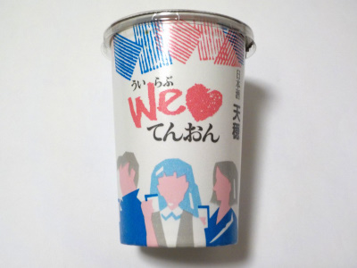
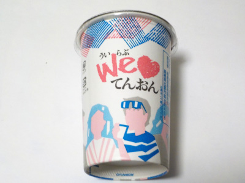
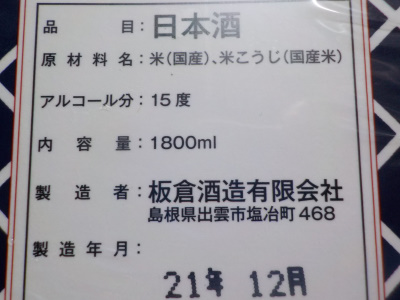
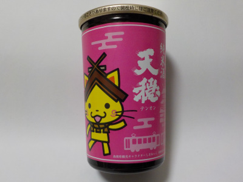
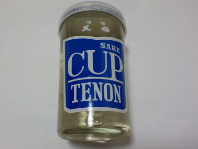
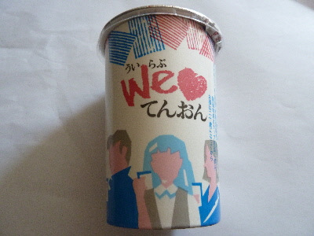

板倉酒造のWe💛てんおん。
2024/01/21

紙パッケージは軽くて持ちやすいですね。捨てるのも簡単です。もっと紙コップのワンカップが増えればいいのにって思っています。
雑味があるって言うと何ですが、深みがあっていいですね、体が温まる感じがしました。
島根県出雲市塩冶町468
2024/01/21

紙パッケージは軽くて持ちやすいですね。捨てるのも簡単です。もっと紙コップのワンカップが増えればいいのにって思っています。
雑味があるって言うと何ですが、深みがあっていいですね、体が温まる感じがしました。
2023/10/21

コスモスで198円で買いました。
ちょっと濃いですが味わいながら飲むと、フルーティーな味がして美味しかったです。
この価格でこの味は凄いな。
2022/04/23

原材料から醸造アルコールがなくなりました。
お米だけて作ったお酒なので、ご飯っぽくて、甘くてフルーティーで美味しいんじゃないかと思ったんですけど、そんなことないです。そうゆうのは精米歩合で決まるものなんだなーと実感しながら飲みました。
醸造アルコールがなくなったぶん味が濃くなったかな。深みが増したかな。
家でネット見ながらちょっとづつ飲むのに丁度いいかなと思いました。
2021/09/24

稲刈りシーズンですね。新米だなーとか考えているうちに、あ米味がする日本酒が飲みたくなりました。
純米酒なので普通に美味しいお米の味と香りがあるものだと思い飲んだんですが、お米の味も香りもありませんでした。
これって不良品？
製造年月は今年の8月で新しいのにこの変な味は何だろう？天穏の味ではなかったです。製造ミスなのかな？
今後しまねっこパッケージの天穏は買わないと思う。
2019/11/03
この天穏は辛かったです。

なんとなく他のメーカーも瓶のワンカップは辛口が多いきがするけど、気のせいかな。
紙のワンカップの方が飲みやすい気がする。
この天穏は辛口で濃い味な感じがしました。
瓶の上にキャップがありますが、これは他のお酒のキャップを取り付けました。今日は一度に全部飲む自信がなかったので、前もって保存用に蓋を準備していました。
2017/08/27
今日はチビチビ日本酒です。

ほどよく甘いお酒ですね。美味しい。